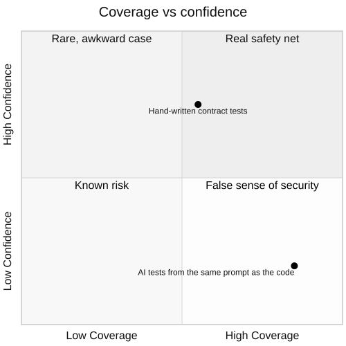

10 — The bus factor isn't one, it's zero
The dangerous version isn't that only one person understands the system. It's that nobody does — including the person who shipped it.
A program is a theory held by the people who built it. The code and the documentation are a trace of that theory, not the theory itself. Most programs die when the team possessing its theory is dissolved. We aim to manifest the theory with design documents, diagrams, documentation, and so on, but there's always decay — even as another part of the program slightly improves. By that definition, a vibe-coded app is dead on arrival — the theory never formed in a human head to begin with, and predominantly the supporting docs it does generate are confirmation bias. The bus factor doesn't count down from some healthy number. It starts at zero on merge day, because the architectural intent lived in the prompts, and the prompts are gone.

In the traditional loop, code is a byproduct of understanding. In the vibe loop, code is a byproduct of a prompt — and the prompt is the part that gets thrown away.
Rubber-stamp review is how this spreads. When AI output volume outpaces a reviewer's ability to re-derive the intent behind it, review degrades into "looks plausible" — and even with the best-tuned adversarial reviews, you're susceptible to automation bias because it looks "authoritative". Six months later you're an archaeologist in a codebase with your own name on every commit.
Tests, after the fact, suffer from the same confirmation bias any design docs generated by the vibe code do — they confirm what the code does rather than what it should do. The specification, acceptance criteria and boundary contracts need to be thoughtfully written by the human — an agent can still fill in the unit tests underneath that boundary.

High coverage and low confidence aren't opposites — they're a common outcome when the tests share the same blind spot as the code.
Every other item in this series is a fixable engineering problem. This one is different, because it removes your ability to fix the others: if nobody can explain how the data model got tangled or why the queue isn't idempotent, nobody can fix it with confidence either. The fix is unglamorous — architecture decision records for anything structural, a written system narrative a new engineer reads on day one — but the rule that does the most work in the entire series is simpler than any of that: if you can't explain how it works, you don't merge it. The agent can write the code. You still have to own the theory.
If you've shipped fast with AI tools and want a second pair of eyes before it goes further, that's exactly what a vibe code audit is for.